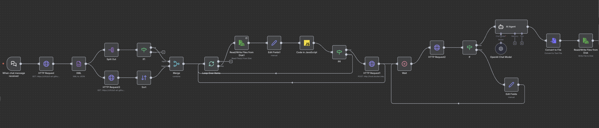
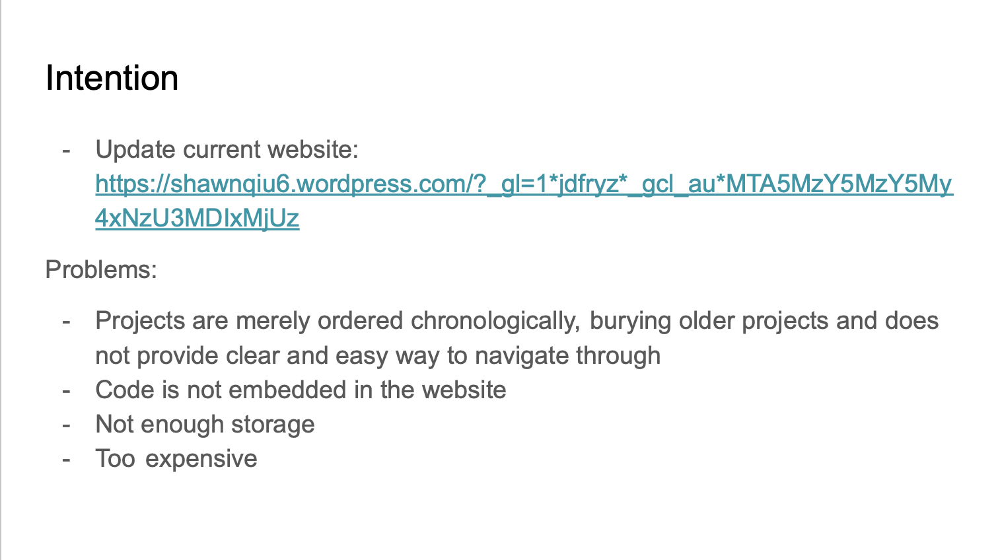
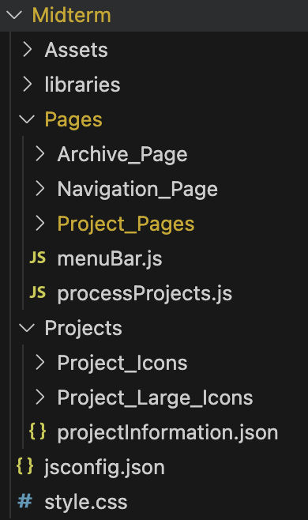
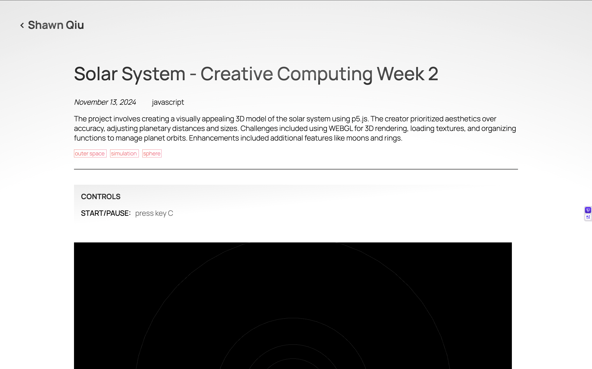

Documentation
2025.12.9 Final Presentation
One Sentence Description:The portfolio website is an exploration of my creative identity through an examination of the interconnections between my various projects.
Source Code
Link to AI
Assistant JS file
Link
to About Page description generation logic
Project Summary
This portfolio website is not intended as a conventional resume to attract employers, but as an experimental exploration of my creative identity. It confronts the fundamental questions: What is my creative identity? Who am I as a creator? Rather than functioning as a polished advertisement of “myself as a product,” the portfolio is an ongoing, incomplete investigation into the journey I have taken as a creator.
On each Project Page, identity is first examined through individual works—the most intuitive first-step, since a creator’s identity is often reflected in the things they produce. Yet defining identity solely through completed projects is reductive as it ignores the relationships and shared notions that span across works. To address this, the Archive Page arranges projects into filtered lists by category and chronological order. However, these organizational structures remain largely formal, offering little insight into how the projects relate conceptually.
The Explorer Page expands this view by introducing larger thematic concepts connected to the content and ideas within each project. This method uncovers patterns and recurring concepts, allowing for a more meaningful interpretation of my creative identity. Still, challenges remain in developing an objective criteria for connecting these concepts, and the resulting network(concept map) captures only an inferred version of my identity based on project interrelations.
The About Page and the AI assistant incorporate AI technology to unify conceptual categories with individual projects through a RAG-based system. This approach provides a richer, more dynamic representation of my creative identity, as the AI is able to articulate and reveal the deeper structures linking my work—offering a more complete and evolving portrait of who I am as a creator.
At the end of this exploration, the portfolio website becomes a machine that continuously generates my creative identity. In the future, all that remains is to add new projects and update the system—and its RAG database—as my work evolves. Conceptually, this portfolio is intriguing because it produces an alternative version of myself, one constructed entirely through the works I have created. It invites reflection on the relationship between a creator and the “self” that emerges from their creations. Ultimately, what is a creator if we disregard their creations? Is a creator purely their creations? I hope to continue developing and deepening this idea in future projects.
Process
First, I used an n8n workflow that uses the AI crawling tool crawl4AI to convert the HTML documentation of each project into markdown files. These files contain detailed information about every project—including titles, dates, metadata, technical summaries, and conceptual descriptions.
Example project md file
---
type: project
title: Animated Images Experiment 3D
secondary_title: The Nature of Code Midterm
category: p5.js
date: March 13, 2025
concepts: cosmos, experimentation, distortion, particles, process
page: https://s1h2a3-art.github.io/Front-End-Web/Portfolio Website/Pages/Project_Pages/Animated_Images_Experiment_3D/
---
## 🔹 Short Summary
A creative project that transforms pixels of a 2D image into interactive 3D particles with multiple dynamic effects, enabling exploration of spatial distortions and animations on a WebGL canvas.
## 🔹 Full Description
This project builds upon two previous experiments: the Animated Images Experiment, which converts image pixels into particle objects using a picSet() function, and Cosmic Tunes, which explored sphere manipulations in a WebGL environment. The core innovation here is transforming each particle into a 3D object and applying unique spatial effects to these particles within a 3D space.
Users can apply a variety of effects like returning particles to their original position, arranging them in 3D space based on brightness, generating wave oscillations, spreading or shrinking particles in two or three dimensions. The interactive canvas allows users to creatively manipulate images by toggling through these effects, with a feature to save interesting compositions. Future plans include adding more 3D effects, enabling gesture controls via ml5, and allowing multiple images to interact dynamically within the 3D canvas.
## 🔹 Technical Details
- Inputs: Single 2D image, user controls via buttons for applying different effects
- Outputs: Interactive 3D particle representation of the image displayed on a WebGL canvas; saved images of compositions on demand
- Core logic:
- Each pixel from the image is converted into a 3D particle positioned in space using an updated picSet() function
- Movement effects are driven by velocity vectors manipulating the particles’ positions:
- Neutral effect moves particles back to origin
- Emphasize effect sorts particles along the z-axis by brightness
- Wave applies sinusoidal oscillations in z-axis
- 2D and 3D Spread/Shrink manipulate the velocity vectors to move particles outward or inward on x, y, and z axes
- Tools / Libraries: p5.js with WEBGL mode, JavaScript, WebGL shading, possibly ml5 for future AI gesture recognition
- **Challenges:**
- Adapting pixel-based 2D data into interactive 3D particle objects
- Designing intuitive velocity vector manipulations for various 3D effects
- Combining visual clarity and performance in a WebGL environment with large particle counts
## 🔹 Related Concepts
- **Cosmos:** Represents spatial and spherical manipulation influences gained from the Cosmic Tunes project, informing the 3D particle behaviors.
- **Experimentation:** The project is an iterative exploration of converting images into novel 3D forms and testing different dynamic transformations.
- **Distortion:** Various effects distort the original pixel layout by repositioning particles in 3D space based on mathematical functions and image properties.
- **Particles:** The fundamental units are particles representing pixels transformed into 3D objects, used as building blocks for visual effects.
- **Process:** The systematic approach of adapting 2D data into 3D objects, implementing interactive effects, and iteratively refining user interaction and visuals.I also prompted the system to generate comprehensive markdown entries for each conceptual category and for every mechanism used throughout the website.
Example concept md file
---
type: concept
name: alienation
projects:
- Project Anima
- AR 3D-ize Experiment
- One Thousand Years Dawn
related_concepts:
- { name: eyeball, score: 2.00 }
- { name: sensation, score: 1.00 }
- { name: game, score: 1.00 }
- { name: alienation, score: 3.00 }
- { name: dasein, score: 1.00 }
- { name: history, score: 1.00 }
- { name: experimentation, score: 1.00 }
- { name: illusion, score: 1.00 }
- { name: mask, score: 1.00 }
- { name: judgement, score: 1.00 }
- { name: automation, score: 1.00 }
- { name: universality, score: 1.00 }
---
## Definition
alienation: a conceptual tag for themes related to alienation within this portfolio.
## Related Projects
- Project Anima
- AR 3D-ize Experiment
- One Thousand Years Dawn
## Related Concepts
- **eyeball** (2.00)
- **sensation** (1.00)
- **game** (1.00)
- **alienation** (3.00)
- **dasein** (1.00)
- **history** (1.00)
- **experimentation** (1.00)
- **illusion** (1.00)
- **mask** (1.00)
- **judgement** (1.00)
- **automation** (1.00)
- **universality** (1.00)
Example system doc md file
---
type: system_doc
name: Archive Page
source_file: Archive.html
---
## Overview
The Archive page loads project metadata, renders project entries, provides search and genre filtering, and paginates results. Its primary components are:
- **Archive.html** (markup)
- **Archive.js** (logic)
- **Archive.css** (styles)
It displays all projects, allows users to filter them, and supports navigation to project pages and concept pages in Explorer.
## How It Works
### Data Loading
- `preload()` uses p5.js `loadJSON()` to fetch
`../../Projects/projectInformation.json`
- The JSON is passed to `processProjectsInformation()`
(callback defined in `processProjects.js`)
### Setup Flow
`setup()` performs core initialization:
1. Clears the search input
2. Sorts `projects` array by **date (descending)**
3. Generates all project entries with `addProjectDivs()`
4. Creates genre buttons from available project categories
5. Runs `searchProjects()` to apply initial filtering
### Rendering Project Entries
`addProjectDivs()` loops over the `projects` array and creates an HTML snippet for each project:
- **Title link:**
`../Project_Pages/${project.page}?project=${encodeURIComponent(project.title)}`
- **Metadata:** date, category, description
- **Concept tags:**
linking to
`../Navigation_Page/Explorer.html?concept=${encodeURIComponent(concept)}`
Each entry is inserted using:
archiveContent.insertAdjacentHTML("beforeend", htmlBlock)
### Search System
The input field `#searchProject` has an `input` event listener that:
- Resets `pageNum = 1`
- Calls `searchProjects()`
- Rebuilds pagination with `organizePages()`
#### `searchProjects()`:
- Reads search text
- Reads selected genre
- Iterates over `.project` elements
→ toggles `.searchResults` / `.noSearchResults`
- Updates global `projectsNum`
- Shows **"No result"** in `#searchAlert` if zero matches
- Calls `organizePages()`
### Genre Filtering
`selectGenre(input)`:
- Normalizes the genre string
- Updates global `selectedGenre`
- Sets `#genreLabel.textContent`
- Re-runs `searchProjects()`
### Pagination (10 per page)
`organizePages()`:
- Collects all `.searchResults`
- Computes slice for current `pageNum`
- Only shows entries in that slice
- Creates/updates `#pageButtonsContainer` with page buttons
`changePage(num)`:
- Updates `pageNum`
- Calls `searchProjects()`
- Scrolls to top
### Additional Utilities
- `clearInput()` clears the search field
## Responsibilities
- Load and process project metadata
- Render all project entries in the archive
- Build interactive genre filters
- Provide live search filtering
- Manage pagination of filtered results
- Display user feedback when searches return zero matches
## Inputs
### Data Inputs
- `../../Projects/projectInformation.json`
- `projects[]` (populated in processProjects.js)
### User Inputs
- Text typed into `#searchProject`
- Clicks on dynamically generated genre buttons
- Clicks on page number buttons
- Clicks on project links
- Clicks on concept tags (navigates to Explorer)
### Required DOM Elements
Archive.html must include:
- `#archiveContent`
- `#genreContainer`
- `#genreLabel`
- `#searchProject`
- `#searchAlert`
- (Generated) `#pageButtonsContainer`
## Outputs
### DOM Outputs
- `.project` elements inserted into `#archiveContent`
- Genre buttons appended into `#genreContainer`
- Pagination UI created at `#pageButtonsContainer`
- `#searchAlert` modified when no results match
### CSS Outputs
Manages:
- `.searchResults` → visible
- `.noSearchResults` → hidden
(Styled in Archive.css)
### Navigation Outputs
- Project links
→ `/Project_Pages/...`
- Concept tag links
→ `Explorer.html?concept=...`
## Key Functions / Code Behavior
### **Loading**
- `preload()` → `loadJSON(..., processProjectsInformation)`
### **Initialization**
- `setup()` → sorting, rendering, genre buttons, search
### **Rendering**
- `addProjectDivs()` → builds HTML for each project
### **Live Search & Filters**
- Event listener on `#searchProject`
- `searchProjects()` → main filtering logic
- `selectGenre()` → genre switching
### **Pagination**
- `organizePages()` → calculates visible slice, builds page buttons
- `changePage()` → update + scroll to top
### **Utility**
- `clearInput()`
## Dependencies
### Libraries
- `../../libraries/p5.min.js`
- `../../libraries/p5.sound.min.js`
### Internal Scripts
- `../../AIAssistant.js`
- `../processProjects.js`
- `../menuBar.js`
- `Archive.js`
### Styles
- `../../style.css`
- `Archive.css`
### Data / Assets
- `../../Projects/projectInformation.json`
Project fields used:
- `project.title`
- `project.page`
- `project.secondary_title`
- `project.date`
- `project.category`
- `project.description`
- `project.concepts`
- `project.mini_icon` (optional; commented out)
Next, I stored these markdown files in a Qdrant vector database using the following workflow. The organization of this data was crucial for preventing hallucination. For each entry, I ensured that all necessary metadata—such as the source file, source type (system_doc | concept | project), concept ID, and project ID—was included to maintain precise retrieval.
I then created an AI assistant interface: a fixed DOM element that expands into a chatbox. When opened, it sends the user’s input to the RAG-powered LLM and returns a precise and accurate response. The visual effect on the minimized icon is generated by alternating between several images produced through ml5’s face-recognition model, using a mechanism similar to Self Portrait 2.0: link to sketch
The About page uses a similar logic—when the user presses a button, a request is sent to the RAG system, which generates a response tailored to the context of that interaction.
Audience/Context
The AI assistant is accessible to all visitors and is designed to answer questions about the relationships between projects and concepts, as well as guide users through the structure of the website.
Next Steps
- Automate the workflow so that newly added projects are automatically processed and integrated into the vector database.
- Expand the AI assistant with additional features such as summarize, explain, and other utility buttons.
- Improve the structure of the vector database to further reduce hallucination and strengthen retrieval accuracy.
- Add supplementary files to the database containing detailed information about the website itself.
- Host the RAG system on a server so that all users can access the AI assistant in real time.
2025.11.12 AI Assistant Update Proposal
Review of midterm project
What I’ve achieved
- The first goal is achieved with the integration of a concept navigational network.
- Second is mostly achieved. Most JavaScript-only projects(except for one, which is too large) are embedded in their respective documentation page.
- Not really. Might have to store larger files in a database. I don’t plan to host the website on GitHub in the future, though.
- It is completely free.
- I have completed the page for each project.
New issues that were introduced
-
automating the process of adding a new project. minimize the amount of code manipulation and stick to changing
only the HTML code
- I created DOMs(image-gallery, custom-seperator, control-instruction, etc) that aggregate multiple tags
- I developed JS functions that are automatic and converge multiple different functions(displayBasicInformation.js, toggleShow.js, etc.)
- However, there are still around 7-10 lines of code that I have to add manually for each project. There are also some issues with the current framework that I need to fix. However, it should be completely functional and competent.
-
Add pages, a search bar, and a filter to the archive page.
- I need to work on this. However, it is not my top priority because the logic should be pretty simple, and the website’s main focus is not on a linear navigation system.
-
Optimize for more devices
- I need to work on this, especially for devices with smaller screens. This may be difficult because I am not sure if a lot of the P5 projects will run smoothly or provide a good user experience. What I might do is to simply disallow mobile access to these p5.js sketches.
- What I want to focus on: analyze the data from the website, establish meaningful connections between the projects, and provide a more interactive experience.
Solution: RAG!
Definition
RAG AI, or Retrieval-Augmented Generation, is an advanced artificial intelligence
architecture that combines information retrieval capabilities with generative language
models. This approach allows AI models to reference external knowledge bases, enhancing
their ability to produce accurate and contextually grounded responses. By integrating
retrieval mechanisms, RAG optimizes the performance of large language models, enabling
them to deliver more relevant and high-quality responses.
Database + LLM = LLM with a specific concentration
Procedure
I need to feed it the information on my website. First, I made an automated AI workflow on n8n that crawls data from my website by simply providing it the sitemap.xml link.

Then, I plan to embed the data from my website using Qwen3-Embedding so that the LLM understands the information.
Finally, I’ll use an LLM model that returns useful responses to users(questions, provides links to my other projects that use similar technologies, categorizations, recommendations based on users’ interest, summarizes pages, etc.) in the format of an AI assistant.
Visual Reference
Sitemap
Wireframe

2025.11.12 Update
I used the WAVE evaluation tool to assess the accessibility of my portfolio website. The most prominent issue that I noticed is the missing alt texts. Because I have so many images on my website and it would be really tedious to change each one by hand, I used an AI agent in VSCode to help me fill in the missing alt text based on the elements around each image. The results were surprisingly accurate. I think this is because the AI agent is able to access all the URL links of the images and understand their content through image recognition. However, the description of the images oftentimes does not convey information about them that only I know about. For example, on the Thinker project page, the AI agent recognized my previous collage artwork of the Thinker as "profile icon featuring The Thinker statue silhouette," missing out the key information that this image is a piece of art created by me in the past that I took inspiration from. Learning from this fact, I will start adding alt text right when I add new img elements in the future, so these images that are missing alt texts don't accumulate to a point where they become unmanageable. Another similar issue is the missing page titles. I also used the AI agent to add page titles to each webpage, but this time I gave it a more specific prompt: "add a page title for each page in the format of:[title of the folder, replacing the _ with spaces]," so that the titles are all standardized. These actions immediately brought the AIM score for most of my project pages from around 5-6 to an 8.
Through WAVE, I also noticed how I used strong instead of h4, which appeared as a possible title warning. I also noticed broken ARIA warnings that I don't seem to be able to locate. Some of these issues are mostly formalistic, and changes can significantly affect the structure of the webpages, so I left them unchanged for now.
2025.11.6 Update
This week, I restructured my files for better readability:
Then, I thought of ways to standardize and simplify the procedure of implementing a new project page. The strategy is to use DOMs to simplify what usually takes multiple HTML elements into one universal tag with its simple attributes and innerText elements. All the DOM code is stored in a single JS file to ensure that the DOM classes can be universally accessible by importing this one file. The DOM classes that I figured to be useful were: a control instructor(which automatically turns the string attribute of instructions(Left: press left arrow key, Right: press Right arrow key,...) into a table:
If the attribute is empty, the control-instruction object will automatically only display necessary information regarding how to pause/resume the code if it's triggered by a key:
If the attribute is "hide", the control-instruction object will be hidden.
The process of integrating these different conditions involved finding exceptions in the pages that wouldn't work well with the code(a page where I want to show the control instructions on the sketch, but not in a table, etc.), and trying to address these exceptions with maximum automation and minimum variables that need to be specified for each page.
Some other DOM classes include: space(which controls the amount of white space between other elements), separator(draws a line to separate two elements), paragraph(skips to the next line to start a new paragraph and applies proper indentation), excerpt(applies the format of excerpts), citation list(creates a list of citations), and citation(applies the format of citation).
Finally, I rewrote some of the project_pages using these DOMs:

2025.10.30 Update
This week, rather than completing the textbook exercises, I decided to continue working on my portfolio website, which I submitted as my midterm project, applying my new understanding of JavaScript, HTML, and CSS. My rationale behind this decision is that I learn much better when I have a concrete task to complete, and especially when that task is motivated by a lot of passion and interest. I still read the textbook chapters since I find them to be extremely helpful(especially when they introduce functions that traverse through arrays: reduce(), map(), and filter() to help modulate the code). Since the navigation system was already functionally complete, I didn't update it except for a few minor aesthetic adjustments(adding a gradient filter to the background, drawing the concept nodes as spheres, etc). Instead, I aimed to develop a fully functioning archive page and a standard algorithm to semi-automate the process of webpages that display the specific project and its documentation.
My objective behind designing the archive page is simple: to provide an alternative to the navigator that is less complex and layered and more simple and one-dimensionally displayable. This simply involved extracting the basic information(date, title, genre, concepts) of each project and displaying it one by one according to some HTML and CSS formatting via a for loop. The concept tags link to the navigator page while carrying the name of the concept in the query string. This way, the navigator knows the concept to focus on from the concept tag accessed on the archive page. There are still many areas for improvement and completion that weren't implemented due to restrictions on time:
- search box
- sorting methods and filters based on date, genre, and concept tags
- separate content into multiple pages to reduce performance issues
- aesthetic issues(considerations for font choice, better user experience, more effective visual communication)
Completed project pages:
- (ml5 project)Aristotle vs Giant Robot Octopuses
- (an opinion essay)One Thousand Years Dawn
- (my first JS project)Self Portrait
- (WEBGL project)Solar System
- (more WEBGL project)Random Planet Destruction Simulator
- (video is not uploaded to GitHub repository because the file is too large)Zero Gravity Theatre: The Brothers Karamazov
Each project page is stored in a different folder inside the large Project_Pages folder. They generally include an index.html, assets that the project or the documentation uses, and the JavaScript file/files of the project itself, including the execution of functions that are universal to all project pages. There are three universal project page functions: goBack(), which allows the user to return to the page where they accessed the project page from, displayBasicInformation(), which displays the information of the project at the top of the webpage, and toggleShow(), which allows the user to pause the project if it is a JavaScript project(if the project uses WEBGL, the function will make the canvas uninteractive, so it doesn't disrupt scrolling or any mouse activity on top of the canvas area). The HTML structure of a project page usually begins with a return button that takes the user to the previous page through goBack()function, the basic information output by displayBasicInformation(), a control hint div that instructs users on how to interact with a project, a project container div that hosts any JavaScript project, and the documentation of the project, which includes text, images, code, audio, video, etc. Even though the outline of the template for a functioning project page is mostly established, there are still numerous areas for optimization:
- Add a user-friendly loading screen, as it takes some time for certain larger projects to load
- Change the size of JavaScript canvases based on the dimensions of the window
- Create HTML classes like imagegallery, code blocks, instruction manual, etc, to modulate these elements so that they can be easily added to a new project page
2025.10.9 Update
This week, I employed the knowledge that I gained last week on pseudo selectors and transformation on the midterm project. I used the transform property to rotate the text: Shawn Qiu, which is a button that toggles the menu sidebar. An issue that I face is that I didn't know how to set the point at which an element rotates about when using transform:rotate(). As a result, after rotating an element, I have to mannually translate it back to where I want it to be.
I also used pseudo selectors to make buttons more responsive and apparent. Pseudo selectors are more intuitive and are really similar to an if statement in a javascript code. I was able to use it to change the state of buttons and links when the mouse hovers above them(indicating that they are interactive) or when they are activated(indicating that the user's input is read by the program). This is why I didn't really encounter any issues when using it. The only thing that I took note of is that the order of a css stylesheet really matters, as it determines which style to override the other styles with when two or more styles contradict. I learned to place the pseudo selectors are at the end of the stylesheet to make sure that they will always have priority when applicable.
Lastly, I didn't want to use animations for my midterm because my objective for this project was to create a simple, concise, and intuitive user interface that *most importantly functions smoothly. Perhaps, I will consider adding animations to the website in the future, but I will most likely have to restructure the html, css, and javascript code.